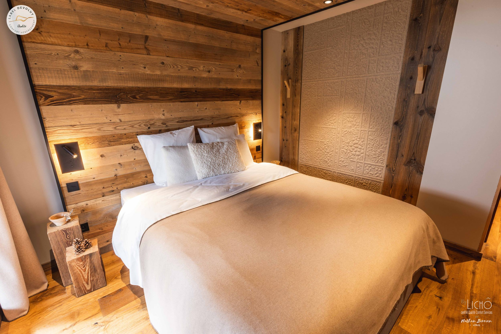
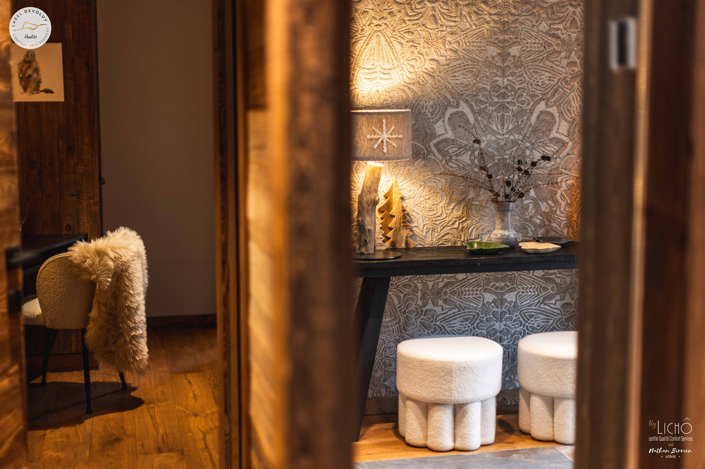
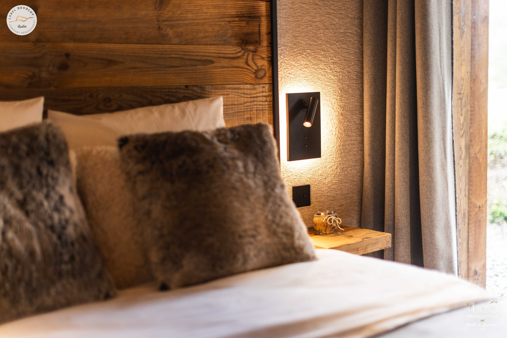

Station
La Joue du Loup, au cœur du massif du Dévoluy.
La Joue du Loup · 05250
Réserver ↗Chambre d’hôtes
en chalet
la suite
des sommets

La suite Génépi est installée au rez-de-chaussée du Chalet Le Chaby, à La Joue du Loup. Un point d’ancrage confortable pour vivre le Dévoluy, entre journées dehors et retours au chaud.
Les repères ↓LE CHABY — LA JOUE DU LOUP — LE CHABY — LA JOUE DU LOUP —


Bois / laine / lumière
Le confort, en altitude.
03 / Les bonnes raisons de s’arrêter
La Joue du Loup, au cœur du massif du Dévoluy.
Accueil ouvert toute l’année, à partir de deux nuits.
Une base pratique pour profiter de la montagne en toute saison.